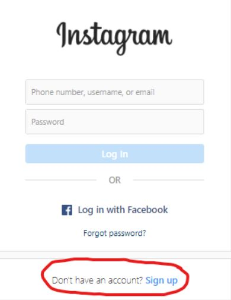
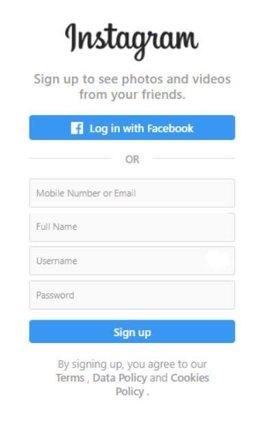
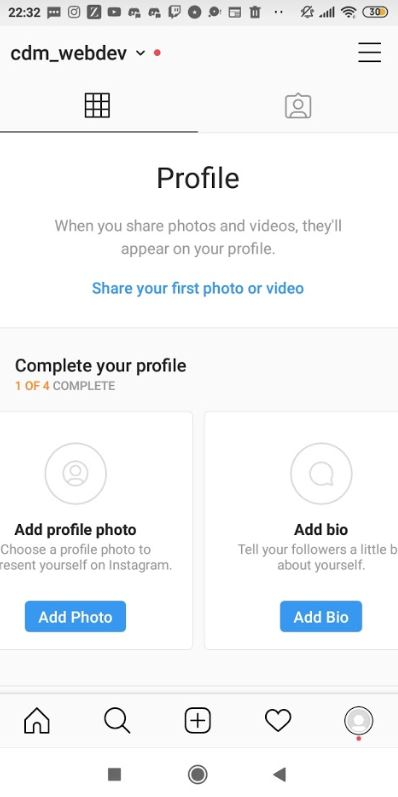
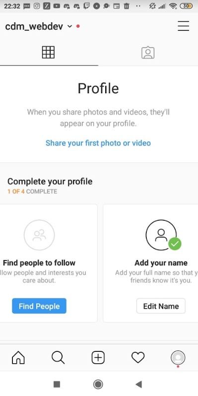

Social Media
Justin Flood
Instagram is a free social media platform which allows users to share pictures and videos with other users. Instagram allows it users to edit pictures and videos in app. Instagram allows users to ‘tag’ users in pictures and videos . the company was founded in 2010 by Kevin Systrom and Mike Krieger. It was later acquired by Facebook in 2012 for 200 million dollars. Users can like and comment on phots and videos. It is also a useful business tool as small business can use this to promote there products and show how they work through short videos. It can also be used too direct ads towards a specific person according to Instagram 1 million advertisers around the world use Instagram tos promote. Its available both as an app for android and iOS and a website.
To register, simply hit sign up and set up a username, your full name, your mobile phone number or Email and create a password as shown:
   When using any social media app in general, there will always be an issue with safety. Using them with caution can minimize the risk but you will never truly be safe when using them as information gets leaked all the time. The best practice is to only put up and share information that you feel comfortable with everyone knowing. With Instagram in general, there are many ways that you can stay protected. One of the easiest ways is to put your account on private. This will restrict access to your account, meaning no one can view your posts unless they follow you. People can request to follow you but is it your decision whether you want them to be able to view your account. You also have the option to choose who can comment on your posts. Your Instagram Stories are also private.
However, if your account is set on private, your profile is still public so they can see your profile photo, bio and username. This shouldn’t be an issue as long as you don’t have any information you’re not comfortable sharing with everyone. When posting pictures on Instagram, you should keep in mind the location setting and the tags you use. These could easily show your location to people. Tags can also be used to see your interests and your location so use them with caution. You should also be careful when sharing beyond Instagram. If you have any other accounts on other sites like Facebook and they aren’t private, it could be shared to everyone. People can also get to your account if you like other people’s post and if you’re tagged in their posts or stories. You can un-tag your account from posts but you can’t from stories so you can ask the person to remove you from the story. Stories aren’t permanent so after 24 hours they get removed. If someone is harassing you, you can always block them and report them to Instagram. Try your best to ignore them and don’t post anything to aggravate them. You can also report people if they’re impersonating you or if they are a spam account. If you take these cautions into consideration, you can minimize the risk that comes with Instagram or any social media.
Teaching and learning can be improved by using social media in education nowadays. Social media and technology has become a huge part of our daily lives with the majority of adults and teenagers with at least one or two different social media tools or apps which can be accessed from many devices. Since we all still use these apps, there are definitely ways to implement them into education. Some ways benefits and approaches to using social media in education are:
1. Communication This one of the biggest advantages to social media, it gives great access to communicate to anyone around the world. Students can connect with their fellow students and teachers easily and from a wide range of devices from mobile phones to PC’s.
2. Collaboration Students and teachers can collaborate easily through tools and apps such as Google Drive and Google Docs, making it easy to access files and documents that the whole class needs.
3. Finding information and inspiration Students can use social media to find information and be up to date to current events through apps such as Twitter. They can find inspiration for projects through sites and apps like Tumblr and Pinterest.
4. Parents Involvement Social Media in Education also helps parents to be connected and involved in the students learning. If the school has a Twitter or Facebook page, parents and students can follow to be updated on the latest news, projects and achievements.
. Improved Literacy, Communication and Reading Skill Students are known to get bored with writing and reading with books and paper. Social media gives them access to information online which can be more catchy and interesting to read. It gives students a different medium to learn which can help with making learning easier.